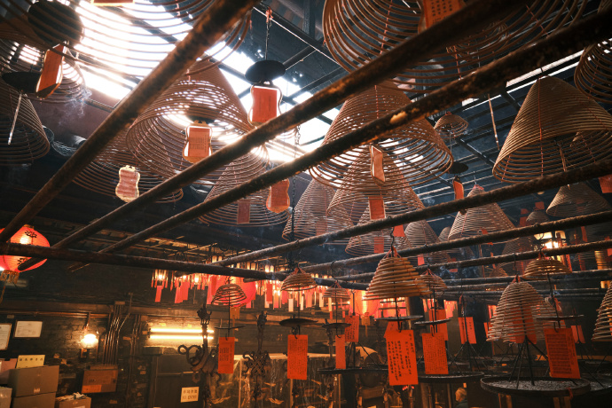
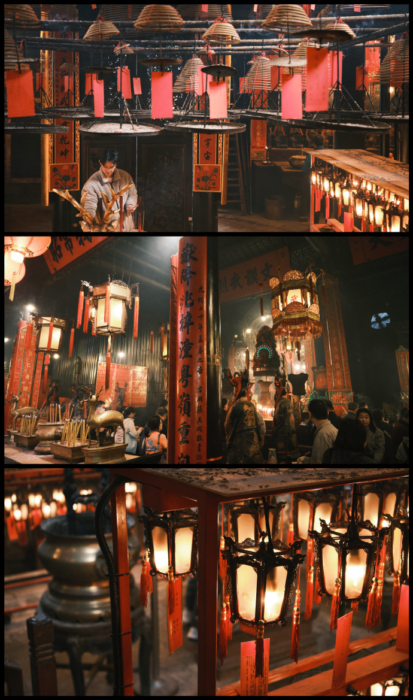
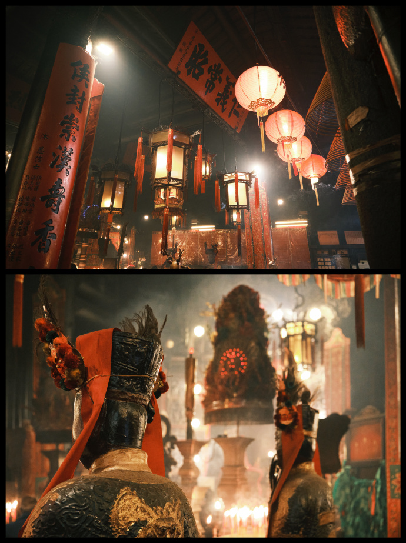

1. 中环 - 文武庙
Transport
香港西九龙站（高铁）
通关：一地两检，出站后步行约 2 分钟到柯士甸站（屯马线）
乘车：柯士甸站 → 红磡 → 换乘荃湾线 → 中环站（约 15 分钟）
出站：中环站 D1 出口，步行到文武庙
Photo tips
利用逆光拍摄香炉烟雾，配合昏暗室内光线，营造电影氛围感
Nearby food
halfway咖啡（李现吃过）
Reference photos



备注（自动保存）